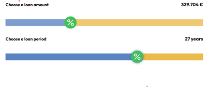

As a programmer creating muck-ups was my weakest point I had to spend alot of time at https://app.diagrams.net/ even it's 4 page web site it took time to complete it. Then again I relized I had to do mobile version of mock-ups at second time i found it much more easier.
Taking a photo of someone's car is always something weird for me so I had to keep it quick couldn't take a few photos of same car and for video it's almost inpossible to take a video of someone's car. I went to tampere then went to the Näsinneula Tower and took a video from top finally manage to see too many apartments and hauses but taking hause photos was much easier
Image slider was the first challange that I have. Of course there are alot of working sliders but I wanted
to have my own
slider. So I created a div system that puts all images together only switches rendered index of image
finally I had to apply proper
Javascript to make it work.
And then the gallery page came up I had to watch some tutorials check w3 school alot again to make it
happen.
first I started with adding image boxes then I found some nice css tutorials to rotate images gently and
lastly
I added a nice shadow box and secon thing was the zooming current selected image for that again I had to
apply javascript to set "src" property of img tag. and of course I had to
play with z-indexes to fully disable background clicking
and when I reliazed that I had to keep different image sizez for different screen sizes I was playing with
scales of images.
so for that I needed for @media queries and I had to revisit all structure
Making sure everything looks and works the same way at all browsers like Firefox/Chrome/Explorer then I push
it to sever
and check on my mobile phone and also check on my tablet it's a time consuming prosess and a little boring
when you find something
generally makes you feel flustered but of course it's like a real life example.
I hadto read project documentation again and again and every time I found something missing or needs work
event it wasn't long document at all it was a good proof that it's easy to miss any item.

I can confidently say that this course let me refresh my web development skills and knowledge. It was also good to see that we still use w3school, that site was my only source to learn and still it's the best source for learning. It wasn't like a teorical course it was like a hands on practical learning besides the knowledge I had chance to learn about different internet sites that I never heard before like lemmy word , decentralized social media platforms ect. And too many open source softwares that I never tried